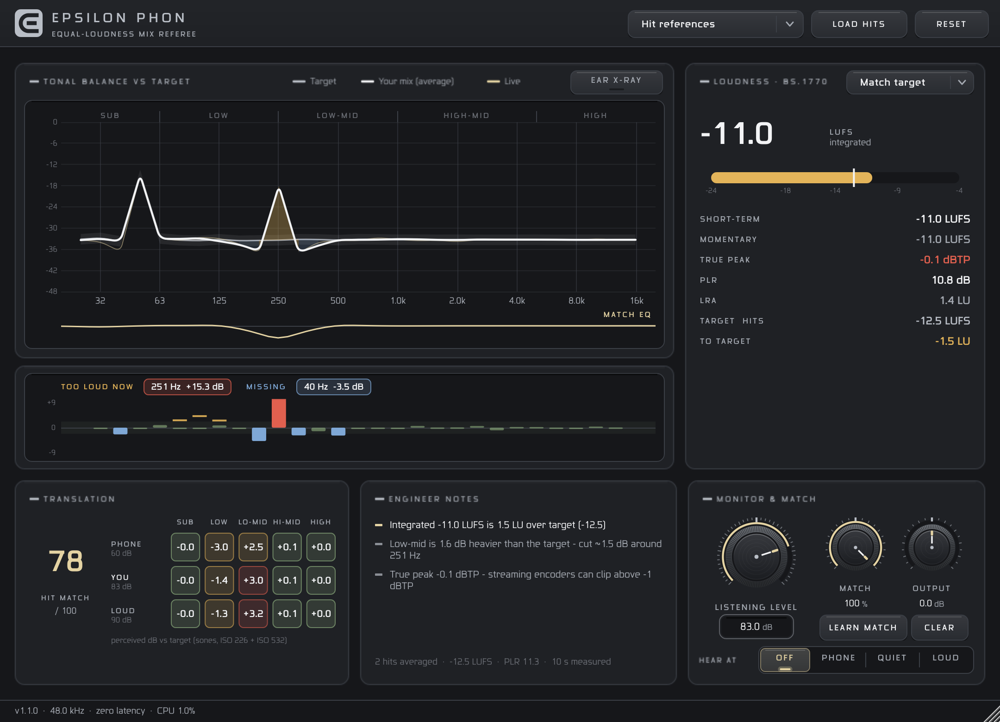

Epsilon Phon
Equal-loudness mix referee · browser demo of the live view
Pick an audio file. It stays on your device; nothing is uploaded.
LIVE — WAITING FOR AUDIO
Bars up (amber / red) = louder than it should be right now. Bars down (blue) = missing. Green zone = within 2 dB of the target. This demo uses the modelled genre curves only. The plugin adds your own hit records, Ear X-ray (ISO 226), the translation grid, LUFS / true peak, Match EQ and Hear-at.

The plugin (VST3 / AU / Standalone). Builds are under Actions in the repository.